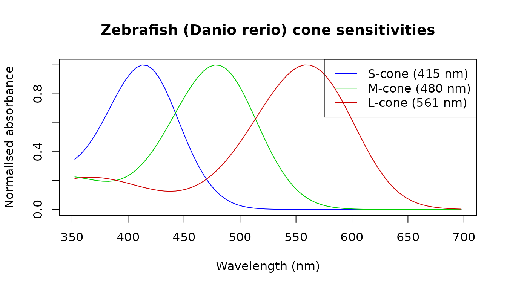
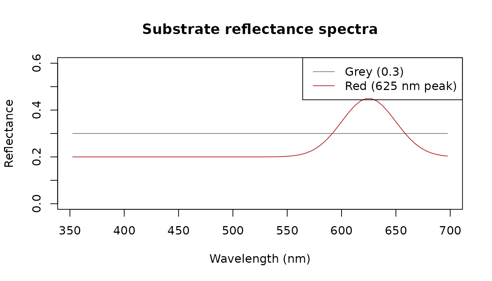
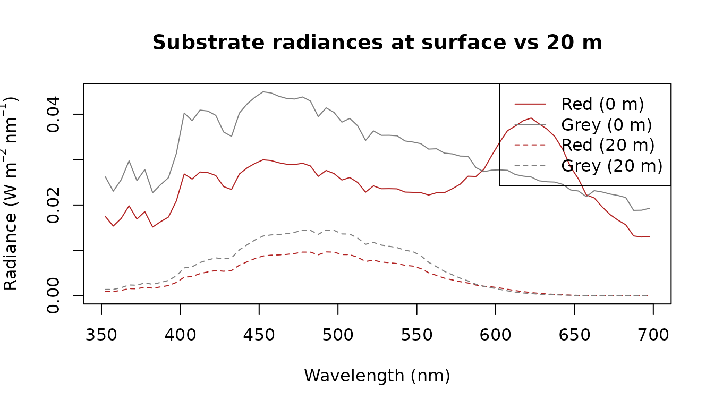
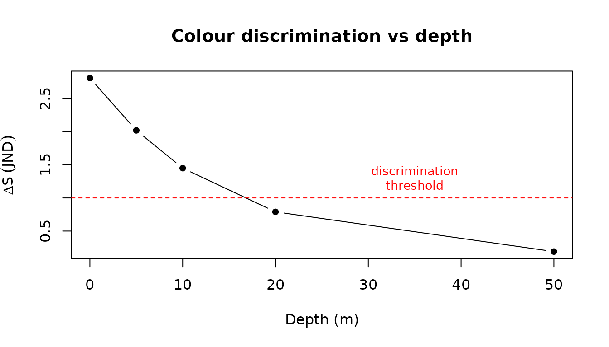

A sensory biologist has spectral reflectance measurements of two substrates and wants to know whether a fish can discriminate them — and at what depth discrimination fails as the blue-shifted underwater illuminant narrows the visible contrast between the two surfaces.
Units and conversions
We begin with the Naples surface spectrum and demonstrate the unit conversions central to sensory ecology. The same photon field can be expressed as an energy flux (W m⁻² nm⁻¹), a photon flux (µmol m⁻² s⁻¹ nm⁻¹), an illuminance (lux), or a scotopic illuminance.
library(luxR)
x0m <- from_naples("0m") # umol/m2/s/nm
x0m_W <- convert_unit(x0m, "W/m2/nm")
x0m_W## <lux_spectrum> irradiance [W/m2/nm] | 352.5-862.5 nm, 5 nm bins (103 pts)
## depth: 0m
## source: Naples
## reference_depth_m: 0
## reference_medium: water
## provenance: Naples
## provenance: naples-mare-chiaro-legacy
## provenance: naplesBokKirwan2021
## provenance: unpublished-author-provided-data
## provenance: not-applicable
## provenance: 2021-12-31
## provenance: legacy bundled snapshot; redistribution terms not documented
## provenance: legacy canonical snapshot extracted from luxR commit 2375244
## provenance: data-raw/naples_legacy_snapshot.csv
## provenance: 5952acfab4a04ea1b02eb085e6a768d5
## provenance: wv=nm;depth_0m|depth_5m|depth_10m=umol/m2/s/nm
## provenance: c(352.5, 862.5)
## provenance: 5
## provenance: parse canonical processed snapshot; validate schema grid and non-negative irradiance
## provenance: naples-legacy-v1
## provenance: list(reference_depth_m = c(0, 5, 10), reference_medium = "water")
## import: bundled/reference source
## import: legacy canonical snapshot extracted from luxR commit 2375244
## import: data-raw/naples_legacy_snapshot.csv
## import: 5952acfab4a04ea1b02eb085e6a768d5
## import: naples-legacy-v1
## import: 0.1.0
## import: NA
## import: parse canonical processed snapshot; validate schema grid and non-negative irradiance
unit_table <- data.frame(
Quantity = c(
"Integrated energy flux in PAR window (W m⁻²)",
"Photon flux — PAR (µmol m⁻² s⁻¹)",
"Photopic illuminance (lux)",
"Scotopic illuminance (scotopic lux)"
),
Value = c(
round(sum(x0m_W$E[x0m_W$lambda >= 400 &
x0m_W$lambda <= 700]) * x0m_W$binwidth, 1),
round(par_irradiance(x0m_W), 1),
round(irradiance2lux(x0m_W), 0),
round(scotopic_lux(x0m_W), 0)
)
)
knitr::kable(unit_table)| Quantity | Value |
|---|---|
| Integrated energy flux in PAR window (W m⁻²) | 102.8 |
| Photon flux — PAR (µmol m⁻² s⁻¹) | 455.9 |
| Photopic illuminance (lux) | 24726.0 |
| Scotopic illuminance (scotopic lux) | 66487.0 |
Photopic lux weights visible wavelengths by the human eye’s sensitivity curve; scotopic lux uses the dark-adapted (rod) curve. Neither preserves spectral shape — which matters when asking what a non-human visual system actually detects.
Numeric API note: All functions also accept plain numeric vectors. For example,
irradiance2lux(x0m_W$E, x0m_W$lambda).
How the spectrum changes with depth
Using a Jerlov Type II open-water model we propagate the surface spectrum to five depths and compare radiometric and photometric summaries.
x0m_Jerlov <- x0m_W[350, 700]
lam <- x0m_Jerlov$lambda
Kd_II <- jerlov_Kd("II", lam)
specs <- propagate_spectrum(x0m_Jerlov, Kd_II, from = 0,
to = c(0, 5, 10, 20, 50))
depth_table <- data.frame(
depth_m = c(0, 5, 10, 20, 50),
PAR_umol = round(sapply(specs, par_irradiance), 1),
lux = round(sapply(specs, irradiance2lux), 0)
)
knitr::kable(depth_table,
col.names = c("Depth (m)",
"PAR (µmol m⁻² s⁻¹)",
"Photopic illuminance (lux)"))| Depth (m) | PAR (µmol m⁻² s⁻¹) | Photopic illuminance (lux) | |
|---|---|---|---|
| 0 | 0 | 455.9 | 24718 |
| 5 | 5 | 261.0 | 16009 |
| 10 | 10 | 171.9 | 10816 |
| 20 | 20 | 84.6 | 5303 |
| 50 | 50 | 12.9 | 792 |
PAR retains spectral shape and photon-flux information relevant to photoreception. Lux collapses the spectrum into a single number weighted for human daytime vision — it can mislead when applied to non-human or scotopic scenarios.
Building a visual model
We use the zebrafish (Danio rerio) cone sensitivities
retrieved from the package database via species_LEF().
Zebrafish (Danio rerio) are tetrachromats with four cone
classes (UV, S, M, L), but we restrict the model to the three
longer-wavelength cones (S at 415 nm, M at 480 nm, L at 561 nm) because
the UV-cone’s peak lies at the edge of the modelled illuminant
range.
sws_df <- species_LEF("Danio rerio", receptor = "S-cone", lambda = lam)
mws_df <- species_LEF("Danio rerio", receptor = "M-cone", lambda = lam)
lws_df <- species_LEF("Danio rerio", receptor = "L-cone", lambda = lam)
plot(sws_df$lambda, sws_df$S, type = "l", col = "blue",
xlab = "Wavelength (nm)", ylab = "Normalised absorbance",
main = "Zebrafish (Danio rerio) cone sensitivities",
ylim = c(0, 1))
lines(mws_df$lambda, mws_df$S, col = "green3")
lines(lws_df$lambda, lws_df$S, col = "red3")
legend("topright",
legend = c("S-cone (415 nm)", "M-cone (480 nm)", "L-cone (561 nm)"),
col = c("blue", "green3", "red3"), lty = 1)
quantum_catch() integrates photon irradiance weighted by
dimensionless sensitivity over wavelength. Its result is in photons m^-2
s^-1 at the measurement plane; it is not an absolute photons-per-second
rate for one receptor. It takes a numeric irradiance vector with an
explicit unit, so we extract $E from each depth spectrum
and declare its energy unit.
qc_list <- lapply(specs, function(s) {
data.frame(
S = quantum_catch(s$E, s$lambda, sws_df,
input_unit = "W/m2/nm", binwidth = s$binwidth),
M = quantum_catch(s$E, s$lambda, mws_df,
input_unit = "W/m2/nm", binwidth = s$binwidth),
L = quantum_catch(s$E, s$lambda, lws_df,
input_unit = "W/m2/nm", binwidth = s$binwidth)
)
})
qc_df <- do.call(rbind, qc_list)
qc_df$depth_m <- c(0, 5, 10, 20, 50)
qc_df$M_L <- round(qc_df$M / qc_df$L, 3)
knitr::kable(qc_df[, c("depth_m", "S", "M", "L", "M_L")],
digits = 2,
col.names = c("Depth (m)", "S-cone catch",
"M-cone catch", "L-cone catch", "M/L ratio"))| Depth (m) | S-cone catch | M-cone catch | L-cone catch | M/L ratio | |
|---|---|---|---|---|---|
| 0 | 0 | 6.484939e+19 | 1.014862e+20 | 1.178168e+20 | 0.86 |
| 5 | 5 | 4.290674e+19 | 7.411390e+19 | 7.656188e+19 | 0.97 |
| 10 | 10 | 2.868235e+19 | 5.443117e+19 | 5.162111e+19 | 1.05 |
| 20 | 20 | 1.317081e+19 | 2.973694e+19 | 2.509909e+19 | 1.19 |
| 50 | 50 | 1.503718e+18 | 5.152246e+18 | 3.687906e+18 | 1.40 |
As depth increases the M/L ratio rises: the blue-shifted deep illuminant peaks near 500 nm, which aligns with the M-cone (480 nm) better than the L-cone (561 nm), shifting the chromatic balance available to the fish.
Reflectance to radiance
We define two synthetic substrates: a spectrally flat grey (reflectance = 0.3 everywhere) and a brownish-red substrate with a Gaussian peak near 625 nm.
grey_R <- lux_spectrum(rep(0.3, length(lam)), lam,
quantity = "reflectance", unit = "dimensionless")
red_E <- 0.2 + 0.25 * exp(-((lam - 625) / 35)^2)
red_R <- lux_spectrum(red_E, lam,
quantity = "reflectance", unit = "dimensionless")
plot(grey_R$lambda, grey_R$E, type = "l", col = "grey50",
ylim = c(0, 0.6),
xlab = "Wavelength (nm)", ylab = "Reflectance",
main = "Substrate reflectance spectra")
lines(red_R$lambda, red_R$E, col = "firebrick")
legend("topright", legend = c("Grey (0.3)", "Red (625 nm peak)"),
col = c("grey50", "firebrick"), lty = 1)
reflectance_to_radiance() multiplies each reflectance by
the depth-dependent illuminant to give the stimulus reaching the
observer’s eye.
rad_grey_0m <- reflectance_to_radiance(grey_R, specs[["0"]])
rad_red_0m <- reflectance_to_radiance(red_R, specs[["0"]])
rad_grey_20m <- reflectance_to_radiance(grey_R, specs[["20"]])
rad_red_20m <- reflectance_to_radiance(red_R, specs[["20"]])
ylim_rad <- range(c(rad_red_0m$E, rad_red_20m$E,
rad_grey_0m$E, rad_grey_20m$E))
plot(rad_red_0m$lambda, rad_red_0m$E, type = "l", col = "firebrick",
ylim = ylim_rad,
xlab = "Wavelength (nm)",
ylab = expression("Radiance (W m"^{-2}~"nm"^{-1}*")"),
main = "Substrate radiances at surface vs 20 m")
lines(rad_grey_0m$lambda, rad_grey_0m$E, col = "grey50")
lines(rad_red_20m$lambda, rad_red_20m$E, col = "firebrick", lty = 2)
lines(rad_grey_20m$lambda, rad_grey_20m$E, col = "grey50", lty = 2)
legend("topright",
legend = c("Red (0 m)", "Grey (0 m)",
"Red (20 m)", "Grey (20 m)"),
col = c("firebrick", "grey50", "firebrick", "grey50"),
lty = c(1, 1, 2, 2))
At 20 m the two radiance curves converge: the blue-shifted illuminant strongly attenuates the red substrate’s 625 nm peak, leaving it nearly indistinguishable from the flat grey.
Colour discrimination
colour_jnd() implements the Vorobyev–Osorio
receptor-noise-limited model. A JND ≥ 1 means the pair is reliably
discriminable; JND < 1 means it is not. We use zebrafish (Danio
rerio) S-, M- and L-cone sensitivities with a Weber fraction of
0.05, comparing the grey and red substrates. When receptor
is omitted, colour_jnd() uses the species’ cited default
chromatic channel from species_channels; it never promotes
rods, irradiance detectors, or incomplete receptor sets to colour
channels.
colour_jnd() takes numeric radiance vectors (W m⁻²
nm⁻¹), so we extract $E and $lambda from the
lux_spectrum objects.
depths <- c(0, 5, 10, 20, 50)
depth_keys <- as.character(depths)
jnd_vals <- sapply(depth_keys, function(d) {
r1 <- reflectance_to_radiance(grey_R, specs[[d]])
r2 <- reflectance_to_radiance(red_R, specs[[d]])
colour_jnd(
stim1 = r1$E,
stim2 = r2$E,
lambda = r1$lambda,
species = "Danio rerio",
receptor = c("S-cone", "M-cone", "L-cone"),
noise = 0.05,
binwidth = r1$binwidth
)
})
jnd_table <- data.frame(depth_m = depths, JND = round(jnd_vals, 2))
knitr::kable(jnd_table,
col.names = c("Depth (m)", "ΔS (JND)"))| Depth (m) | ΔS (JND) | |
|---|---|---|
| 0 | 0 | 2.81 |
| 5 | 5 | 2.02 |
| 10 | 10 | 1.45 |
| 20 | 20 | 0.79 |
| 50 | 50 | 0.19 |
plot(jnd_table$depth_m, jnd_table$JND, type = "b", pch = 16,
xlab = "Depth (m)",
ylab = expression(Delta * S ~ (JND)),
main = "Colour discrimination vs depth")
abline(h = 1, lty = 2, col = "red")
text(35, 1.3, "discrimination\nthreshold", col = "red", cex = 0.85)
fail_idx <- which(jnd_table$JND < 1)
if (length(fail_idx) > 0) {
cat(sprintf(
"Discrimination fails (JND < 1) at %d m depth.\n",
jnd_table$depth_m[fail_idx[1]]
))
} else {
cat("JND remains above 1 at all modelled depths.\n")
}## Discrimination fails (JND < 1) at 20 m depth.The model predicts that the zebrafish can discriminate the grey and red substrates in well-lit shallow water (JND ≈ 2–3 near the surface) but loses the ability by 20 m, where the blue-shifted Jerlov II illuminant has attenuated the red substrate’s 625 nm peak sufficiently to render it indistinguishable from the flat grey (JND < 1).
Validation against pavo
luxR’s colour_jnd() is the Vorobyev–Osorio
receptor-noise-limited model, the same model implemented by the widely
used pavo package
(vismodel() + coldist()). Given identical
receptor sensitivities, stimuli, and noise, the two must agree. They do
— to machine precision — once the conventions are matched:
- feed pavo luxR’s own Govardovskii templates as the visual system;
- luxR integrates photon catch (∝
E × lambda); reproduce that in pavo with an illuminant proportional to wavelength; - luxR’s per-receptor noise is the Weber fraction directly; reproduce
that with equal cone ratios (
n = 1), soe_i = weber; - use raw quantum catches:
vismodel(qcatch = "Qi", vonkries = FALSE, relative = FALSE).
library(pavo)
lam <- 300:750
s1 <- approx(solar_spectra$clear_noon$wavelength,
solar_spectra$clear_noon$irradiance, lam, rule = 2)$y
s2 <- approx(solar_spectra$underwater_10m$wavelength,
solar_spectra$underwater_10m$irradiance, lam, rule = 2)$y
w <- 0.05
pavo_dS <- function(species) {
members <- species_channels[
species_channels$species == species &
species_channels$channel_role == "chromatic" &
species_channels$is_default,
]
species_rows <- species_sensitivities[
species_sensitivities$species == species,
]
recs <- species_rows[match(members$receptor, species_rows$receptor), ]
S <- sapply(seq_len(nrow(recs)), function(i)
govardovskii_template(lam, recs$lambda_max[i], recs$chromophore[i])$S)
colnames(S) <- make.unique(recs$receptor)
vm <- vismodel(as.rspec(data.frame(wl = lam, s1 = s1, s2 = s2), lim = range(lam)),
visual = as.rspec(data.frame(wl = lam, S), lim = range(lam)),
illum = lam, qcatch = "Qi", vonkries = FALSE,
relative = FALSE, achromatic = "none")
coldist(vm, noise = "neural", n = rep(1, nrow(recs)),
weber = w, weber.ref = 1, achromatic = FALSE)$dS[1]
}
species <- c("Homo sapiens", "Apis mellifera", "Danio rerio")
cmp <- data.frame(
species = species,
luxR = sapply(species, function(sp)
colour_jnd(s1, s2, lambda = lam, species = sp, noise = w)),
pavo = sapply(species, function(sp) suppressMessages(pavo_dS(sp)))
)
cmp$abs_diff <- abs(cmp$luxR - cmp$pavo)
knitr::kable(cmp, digits = c(0, 6, 6, 14),
col.names = c("Species", "luxR ΔS", "pavo ΔS", "|difference|"))| Species | luxR ΔS | pavo ΔS | |difference| | |
|---|---|---|---|---|
| Homo sapiens | Homo sapiens | 1.865302 | 1.865302 | 2.0e-14 |
| Apis mellifera | Apis mellifera | 0.943538 | 0.943538 | 1.2e-13 |
| Danio rerio | Danio rerio | 1.768219 | 1.768219 | 1.5e-13 |
The agreement is a useful regression guard as well as a check on
correctness: tests/testthat/test-pavo-validation.R asserts
it automatically wherever pavo is installed.
Interoperating with pavo
Beyond validation, luxR and pavo compose: luxR propagates
the light field through the water, and pavo analyses the resulting
colours. as_rspec() converts luxR spectra into pavo’s
rspec class, after which the whole pavo toolkit
(vismodel(), coldist(),
colspace(), plotting) is available; an
as_lux_spectrum() method converts back.
The pipeline below propagates daylight to 15 m in Jerlov II water with luxR, then uses that in-water light field as the illuminant for a pavo visual model of two substrates — a calculation neither package does alone.
library(pavo)
# luxR: the downwelling light field at 15 m (this becomes pavo's illuminant)
Ld <- light_at_depth("clear_noon", "II", depth = 15,
wavelength_policy = "trim")
# Two object reflectances, bridged into pavo via as_rspec() (interpolated to 1 nm)
lam <- Ld$lambda
gauss <- function(centre) 0.2 + 0.25 * exp(-((lam - centre) / 35)^2)
refl <- as_rspec(list(
red_substrate = as_lux_spectrum(
gauss(625), lambda = lam,
quantity = "reflectance", unit = "dimensionless"
),
grey_substrate = as_lux_spectrum(
rep(0.3, length(lam)), lambda = lam,
quantity = "reflectance", unit = "dimensionless"
)
), lim = c(300, 700)) # match pavo's built-in honeybee visual system
# Put luxR's light field on the rspec's (1 nm) grid so it can serve as the illuminant
illum <- approx(Ld$lambda, Ld$irradiance, refl$wl, rule = 2)$y
# pavo: model a honeybee viewing those substrates UNDER luxR's underwater light
vm <- vismodel(refl, visual = "apis", illum = illum,
qcatch = "Qi", relative = FALSE)
coldist(vm, n = c(1, 1, 1), achromatic = FALSE)[, c("patch1", "patch2", "dS")]## patch1 patch2 dS
## 1 red_substrate grey_substrate 0.2932094luxR owns the water; pavo owns the colour space, and
as_rspec() is the seam.